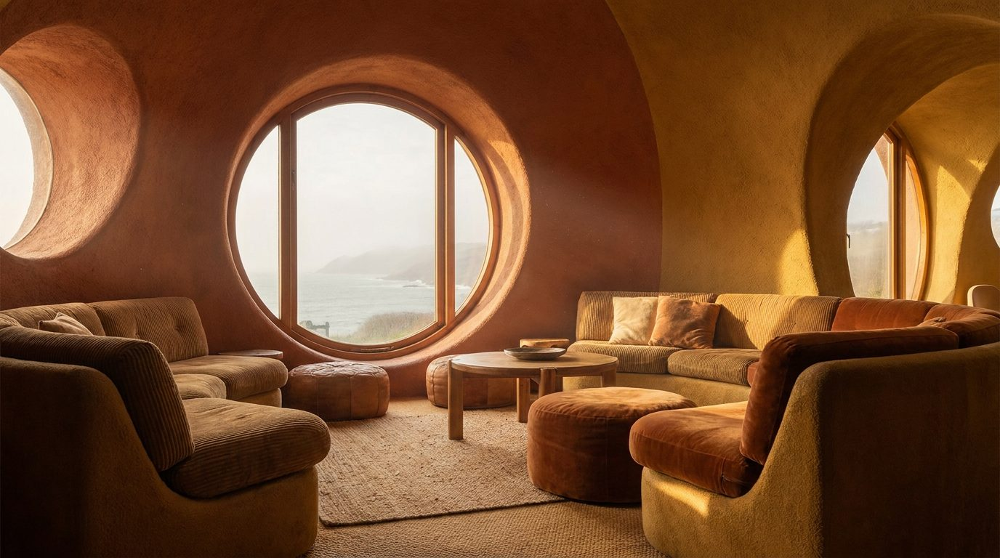

Atlante · FR-08 · Francia · Île-de-France
Appartamento anni '70 a colori saturi
Esempi · esterno e interno


Perché funziona
il brief chiede "pareti e superfici colorate": questa tipologia giustifica saturazione alta senza scadere nel kitsch, ed è ideale per arredi in velluto, plexiglass, ceramica.
Architettura · elementi riproducibili
- Boiserie in teak o rovere tinto, 0,8–1,0 m; carta da parati geometrica
- Moquette o linoleum; piastrelle a motivi; soffitto con travi finte
- Camino in pietra con mensola bassa; specchi fumé; chrome e plexiglass
- HSP 2,50–2,80 m; infissi in alluminio anodizzato
Luce
luce artificiale calda (2700–3000 K) combinata con una finestra a 5000 K; ombre profonde, saturazione alta ma non fluorescente.
Prompt di generazione (EN)
1970s French apartment living room, burnt-orange lacquered wall, teak veneer panels, geometric wallpaper in mustard, brown shag rug, smoked-glass coffee table, chrome arc lamp lit warm, velvet avocado sofa, low stone fireplace. Warm tungsten interior light at 2900 K mixed with cool daylight from a balcony door, saturated colour, deep open shadows, subtle film grain. 35 mm lens, f/2.8, camera at 1.3 m, slightly off-axis, no people, 4:5.
Errori tipici da controllarecolori che virano al neon; mix casuale di arredi di decenni diversi; moquette resa come plastica.